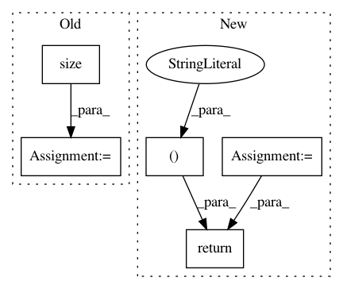

c1d9de30ac38adcf0d3400a805af03d7f8ec1d9f,gpflow/transforms.py,LowerTriangular,backward_tensor,#LowerTriangular#Any#,392
Before Change
def backward_tensor(self, y):
print(y.shape.as_list())
N = tf.cast(tf.sqrt(tf.size(y) / self.num_matrices), tf.int32)
reshaped = tf.reshape(y, shape=(N, N, self.num_matrices))
print(reshaped, reshaped.shape.as_list())
N_not_tensor = reshaped.shape.as_list[0]
indices = np.dstack(np.tril_indices(N_not_tensor))[0]
triangular = tf.reshape(tf.gather_nd(reshaped, indices), shape=[-1])
return triangular
After Change
CAVEAT: Requires defined shape and can"t work with unknown shape.
size = np.prod(y.shape.as_list())
N = int(np.sqrt(size / self.num_matrices))
reshaped = tf.reshape(y, shape=(N, N, self.num_matrices))
indices = np.dstack(np.tril_indices(N))[0]
triangular = tf.reshape(tf.gather_nd(reshaped, indices), shape=[-1])
return triangular[None, :]
def log_jacobian_tensor(self, x):
return tf.zeros((1,), settings.float_type)
In pattern: SUPERPATTERN
Frequency: 3
Non-data size: 5
Instances
Project Name: GPflow/GPflow
Commit Name: c1d9de30ac38adcf0d3400a805af03d7f8ec1d9f
Time: 2018-01-02
Author: art.art.v@gmail.com
File Name: gpflow/transforms.py
Class Name: LowerTriangular
Method Name: backward_tensor
Project Name: maciejkula/spotlight
Commit Name: 70e4d7fe60a9658bb27b9f5fb67592a1222b2ec3
Time: 2017-07-06
Author: maciej.kula@gmail.com
File Name: spotlight/sequence/representations.py
Class Name: CNNNet
Method Name: user_representation
Project Name: maciejkula/spotlight
Commit Name: 70e4d7fe60a9658bb27b9f5fb67592a1222b2ec3
Time: 2017-07-06
Author: maciej.kula@gmail.com
File Name: spotlight/sequence/representations.py
Class Name: PoolNet
Method Name: user_representation